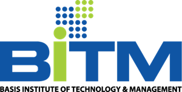

Business Operations Management
Keep day-to-day operations planned, coordinated, and tracked, so execution does not depend on the founder chasing it.
Operational PlanningWorkflow OptimizationExecution TrackingBusiness Systems

Business Operations & Program Manager | Process Improvement & AI
OPERATIONS
PROGRAMS
AI
I turn leadership priorities into structured execution: clear owners, tracked delivery, documented processes, and automation where it pays off.
Is your business growing, but operations are becoming harder to manage?
Projects need constant follow-up. Priorities are scattered across meetings, Slack, email, spreadsheets, and project management tools. Ownership is unclear. Processes are undocumented. Teams are busy, but leadership still has to chase updates to understand what is actually happening.
That is where I help. I work with founders, CEOs, startups, and growing teams to improve business operations, program and project delivery, processes, reporting, and execution.
My background combines Business IT (BSc, University of Greenwich), Data Science (MSc, Jahangirnagar University), and an MBA in Management. That lets me work comfortably across operations, management, technology, data, AI, product, UX, and cross-functional teams, and turn leadership priorities into structured execution.
Keep day-to-day operations planned, coordinated, and tracked, so execution does not depend on the founder chasing it.
Plan, run, and deliver cross-functional initiatives with clear milestones, owners, risks, and status.
Take strategic initiatives off the founder's plate and give leadership a clear view of priorities, decisions, and follow-ups.
Map how work actually happens, remove bottlenecks, and document it as SOPs, playbooks, and checklists teams follow.
Translate business needs into clear requirements, user stories, and acceptance criteria that technical teams can build from.
Set up the tools your team works in so tasks, documentation, and status live in one reliable place.
Define the KPIs that matter and build dashboards and management reports leadership can make decisions from.
Find the repetitive work worth automating and plan and implement AI-assisted workflows that actually get used.
I am not only a project manager who updates task boards. I understand the business process behind the project, the data behind the decision, and the technology behind the workflow. That makes me the connection point between:
I take an unclear leadership request and turn it into:
That means fewer things falling through the cracks, and less time spent by leadership chasing updates.
Programs I led and built end-to-end at AIBYTERS, from scoping and requirements through delivery, QA, and operational hardening.
Program Management Requirements Role & Workflow Design Risk & Controls KPI Dashboards AI / ML
Credit unions were running members, savings, loans, front desk, and accounting on fragmented tools, and managers had no view of portfolio risk. I led a multi-tenant SaaS platform from build plan to hardened product: role-based workflows for tellers, loan officers, branch managers, and board members; approval controls; 12 management and AI dashboard views; ML risk scoring; and a platform audit tracked to closure.
Read Case StudyProcess Automation Sales Operations Lead Scoring Data Quality Python
Prospect research was manual, slow, and inconsistent. I turned it into a repeatable pipeline: search, enrich, validate, and score businesses from 0 to 100, then deliver a sales-ready Excel file already split into High Priority, Standard, Phone-only, and Reject lists. Version 2 runs 3–5× faster and resumes automatically after any interruption.
Read Case StudyReporting Standards KPI Visualization Strategy Frameworks Reusable Systems React / TypeScript
Every dashboard and report was redrawing the same charts in a different way. I built a single reusable library of 48 visualization components across 6 categories, from KPI cards and BI charts to SWOT, PESTLE, and risk-matrix frameworks and AI insight cards, all driven by one shared data spec and plugged directly into the Credit Union platform's dashboards.
Read Case StudyHands-on analytics and AI work, and why I can talk to data teams in their language.
Program M&E Data Quality ETL MongoDB Streamlit Dashboard
How does an NGO's program manager know if an education program is working, and whether the data behind that answer can be trusted? This end-to-end pipeline processes 12,246 field records across 14 entity types, runs 58 data contract checks on every run, quarantines bad records automatically, and exposes program KPIs and pipeline health on a live dashboard.
Process Maturity Survey Analytics Segmentation Statistical Testing LLM Text Analysis
Why do small embroidery shops undercharge? Analysis of 680 pricing diagnostics and 200 financial benchmarks found that shops with a formalized pricing system charge about $67/hour more than those pricing on gut feel. LLM-based thematic analysis of 600+ open-text responses identified "undercharging anxiety" as the main barrier. The takeaway is process, not calculators.
Bottleneck Analysis Product Analytics UX Research Propensity Modeling
Where does an online store actually lose buyers? Across 490,398 real sessions, the biggest loss was not checkout: only 8.45% of product-page sessions added to cart (a 91.55% drop-off), while 58.99% of carts converted. A purchase-propensity model then flagged high-intent non-buyers as a prioritized UX review queue.
Data Scraping Data Modeling (3NF) GIS Tableau Market Analysis
Scraped and normalized PropertyFinder.ae listings into a relational model, geocoded every property, segmented the market by price, size, location, and date, and delivered interactive Tableau dashboards on properties and agent performance.
Learn MoreData Scraping Deep Learning Computer Vision Machine Learning
A computer-vision model that identifies mammal species of the Indian subcontinent to support faster species identification for conservation work.
Learn MoreData Collection Image Augmentation Transfer Learning Computer Vision
Collected images across all 42 orders of the Aves class and trained a ResNet101 transfer-learning model to classify birds by order.
Learn MoreWeb Scraping NLP Transfer Learning Language Models
Scraped fan-fiction descriptions from Royal Road and trained a multi-label transformer model to predict story genres, evaluated with F1 and ROC AUC.
Learn MoreFounder & Program Lead
Founder
2026 - Present
AIBYTERS
Lead Analyst & Program Manager
Full-Time
2024 - Present
Perceive Now Inc.
Data Analyst
Full-Time
2023 - 2024
Invento Software Limited
UX Consultant
Freelance
2023 - Present
Upwork
Database Specialist
Part-Time
2016 - 2020
Nexgen Electronics LTD
Program & Project Management
Operational Planning
Stakeholder Management
Risk & Issue Tracking
Agile / Scrum / Kanban
CEO & Founder Support
Process Mapping
SOPs & Playbooks
Requirement Gathering
User Stories & Acceptance Criteria
Workflow Design
Bottleneck Analysis
KPI Design & Tracking
Dashboards & Executive Reporting
Statistical Analysis
Survey Design & Analysis
Market Analysis
Python, R & SQL
AI Workflow Planning
Process Automation
Prompt Engineering
Custom GPT / Claude Workflows
Machine Learning
AI Implementation Planning

Learned Agile project management fundamentals including Agile values and principles, Scrum pillars and key events, sprint planning and backlog prioritization, and coaching teams using user stories and Kanban to overcome delivery challenges.
Learned essential project management principles, including project lifecycles, stakeholder communication, task prioritization, and risk management. Gained practical tools for planning, organizing, and delivering successful projects.
Learned to build modern data warehouse solutions on Azure, covering data ingestion, processing options, and enterprise analytics with Synapse, Databricks, and HDInsight.
Gained expertise in relational and non-relational data concepts, SQL databases, and NoSQL systems. Learned to choose appropriate workloads and integrate Azure SQL securely for enterprise use.
Introduced data fundamentals including ETL, data modeling, SQL queries, and cloud-based engineering.

Learned UX driven survey methodology and scalable user research techniques including web analytics, A/B testing, and remote unmoderated studies to derive actionable insights from large user populations.

Practical training in user research, wireframing, prototyping, and usability testing for digital products.
Specialized in Oracle database administration, backup & recovery, and performance tuning.
Learned to deliver psychological first aid using the RAPID model, including reflective listening, crisis assessment, psychological triage, acute distress intervention, appropriate referral, and self-care practices.
University of Barishal
2025 – PresentJahangirnagar University
2021 – 2023University of Greenwich
2015 – 2020
Mental Health Volunteer
Dear Camelia
2021-2023
At Dear Camelia, I served as a mental health volunteer on a virtual platform dedicated to providing support to those in need. As first responders, our team was committed to helping individuals seeking assistance and guidance during challenging times.
In addition to our direct support role, we actively contributed to raising awareness about mental health issues. This involved writing informative articles and creating engaging social media posters to promote mental well-being and offer valuable resources to the community.
For any queries or validation, them as described on https://dearcamelia.com/contact-us-en/
Tell me what's slowing your team down. In a 30-minute call we'll map the bottleneck and agree on the first practical step.